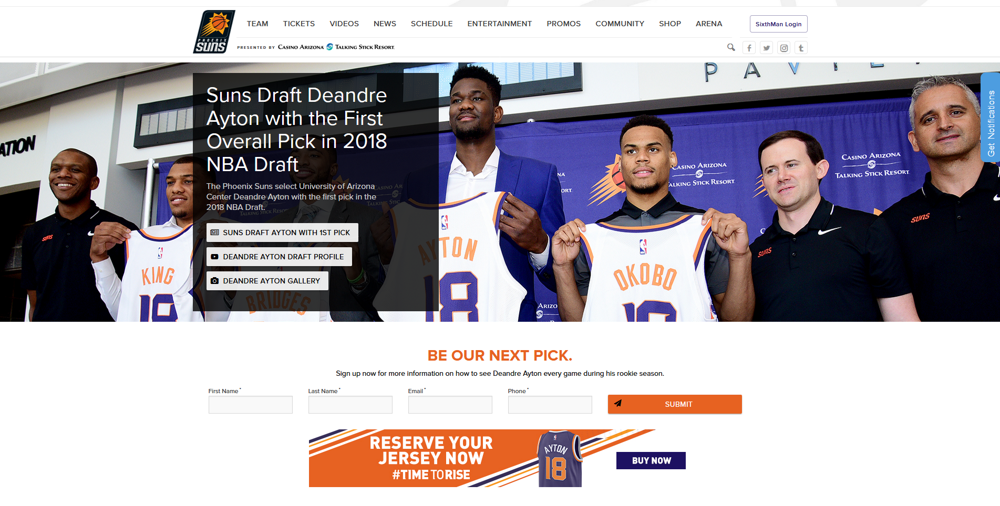
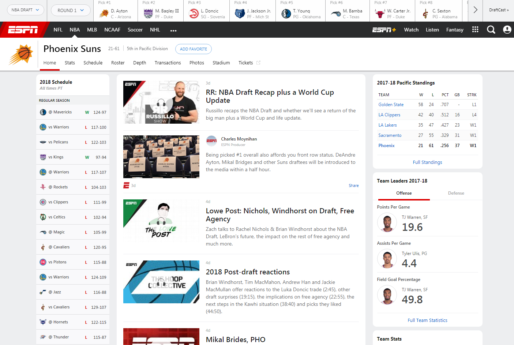
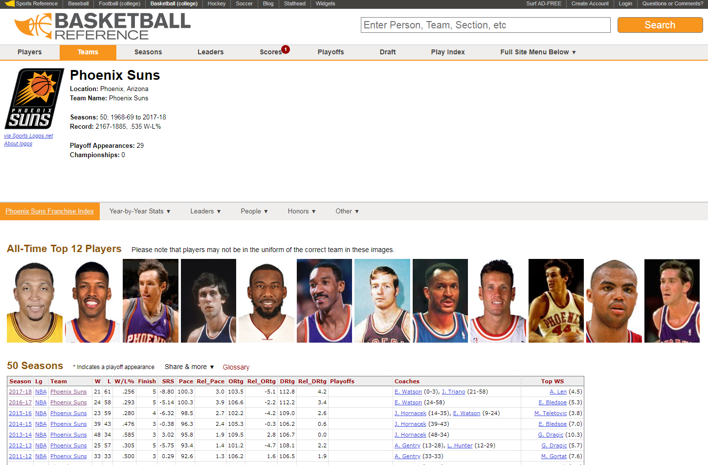

Important Links
Below are some essential links for fans of the Phoenix Suns!
- Official Phoenix Suns Site 
- ESPN:Phoenix Suns 
- Basketball Reference: Phoenix Suns 
This is the official National Basketball Association website of the Phoenix Suns. Catch up on anything and all things Phoenix Suns on this site. From buying team gear and tickets, to checking out their upcoming schedule, this site is a go to for Phoenix Suns fans.
ESPN, being one of the leaders in sports, has plenty of coverage and news about all major sports, with basketball being no exception. There is plenty of news, information, and more on not only the Phoenix Suns, but also all 30 NBA teams. This is a great site to visit when trying to stay up to date with all things NBA, as well as the Phoenix Suns.
Looking for stats and past history? This site is a comprehensive collection of all the statistics one could ever need on all things basketball. This site has plenty of info for any Suns fan, or basketball fan in general, itching to learn past history, like who played the most amount of games in a Phoenix Suns uniform. Think of this as an encyclopedia for basketball stats, but better!